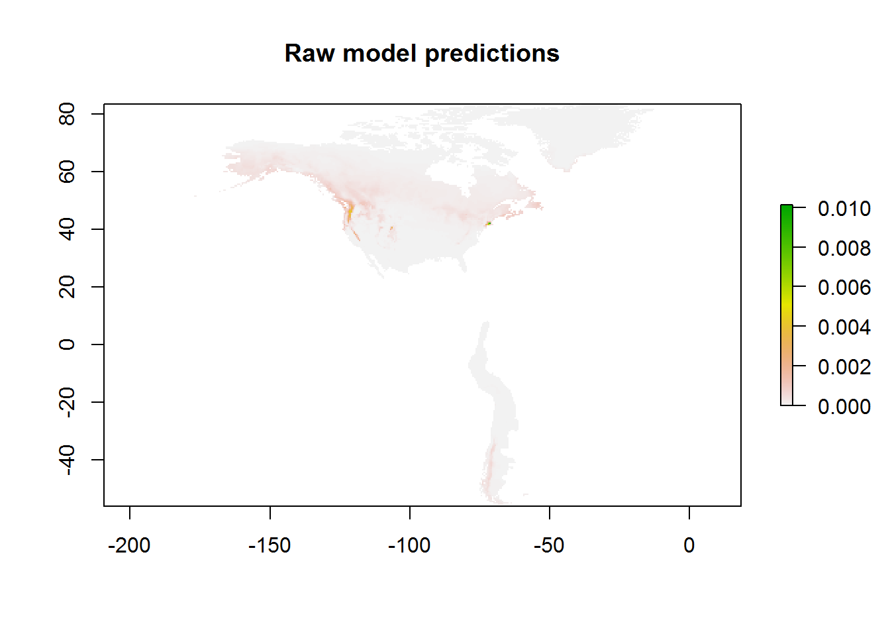
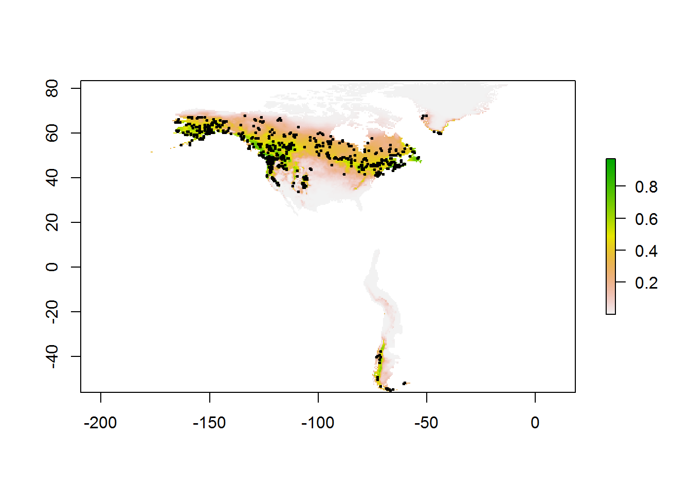
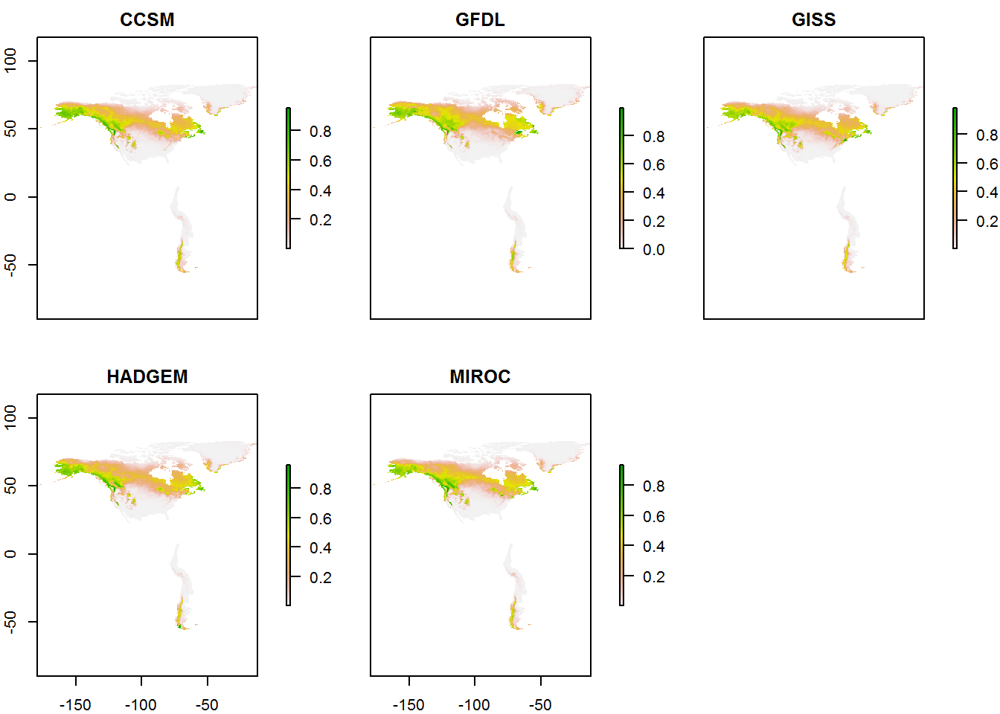
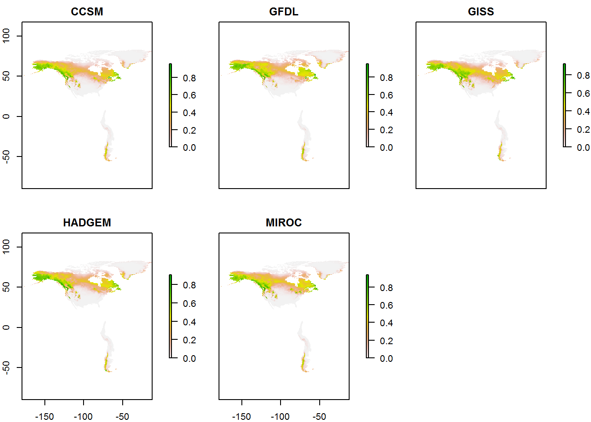

library(Carex.bipolar)
library(ENMeval)
species <- "canescens"
load(paste0(root, "/analyses/output/fullspp_ENMeval/", species, "_modeval.rda"))
#modevalAfter examining output of ENMeval for each species.
if (species == "allspp") bestmodel <- "LQH_1.5"
if (species == "canescens") bestmodel <- "LQH_2"
if (species == "macloviana") bestmodel <- "LQ_1.5"
if (species == "magellanica") bestmodel <- "LQ_1"
if (species == "maritima") bestmodel <- "LQ_1.5"
if (species == "microglochin") bestmodel <- "LQ_1"locs <- as.data.frame(readr::read_csv(file.path(root, "data/locs_30m.csv")))
## Select only occurrences of this species (defined in makefile):
if (species != "allspp") locs <- locs[locs$species == species, ]bioclim.pres <- read_presclim()## Raw Maxent values
pres.pred.raw <- modeval@predictions[[bestmodel]]
plot(pres.pred.raw, main = "Raw model predictions")
## Logistic predictions
pres.pred <- predict(maxmod, bioclim.pres, args = c("outputformat=logistic"))
# Plot
plot(pres.pred)
points(locs$longitude, locs$latitude, col = "black", pch = 20, cex = 0.5)
# Save
writeRaster(pres.pred, filename = paste0(root, "/analyses/output/fullspp_predictions/", species, "/", species, "_proj_pres.grd"),
overwrite = TRUE)## class : RasterLayer
## dimensions : 279, 334, 93186 (nrow, ncol, ncell)
## resolution : 0.5, 0.5 (x, y)
## extent : -179, -12, -56, 83.5 (xmin, xmax, ymin, ymax)
## coord. ref. : +proj=longlat +datum=WGS84 +no_defs +ellps=WGS84 +towgs84=0,0,0
## data source : C:\Users\FRS\Dropbox\Rcode\myRcode\researchprojects\Carex.bipolar\analyses\output\fullspp_predictions\canescens\canescens_proj_pres.grd
## names : layer
## values : 1.587498e-07, 0.9709326 (min, max)pred.rcp45 <- combine_pred(maxmod, "rcp45")
plot(pred.rcp45)
writeRaster(pred.rcp45, filename = paste0(root, "/analyses/output/fullspp_predictions/", species, "/", species, "_proj_rcp45.grd"),
overwrite = TRUE)pred.rcp85 <- combine_pred(maxmod, "rcp85")
plot(pred.rcp85)
writeRaster(pred.rcp85, filename = paste0(root, "/analyses/output/fullspp_predictions/", species, "/", species, "_proj_rcp85.grd"),
overwrite = TRUE)devtools::session_info()## - Session info ----------------------------------------------------------
## setting value
## version R version 3.4.2 (2017-09-28)
## os Windows 7 x64 SP 1
## system i386, mingw32
## ui RTerm
## language (EN)
## collate English_United Kingdom.1252
## tz Europe/Paris
## date 2017-11-13
##
## - Packages --------------------------------------------------------------
## package * version date
## assertthat 0.2.0 2017-04-11
## backports 1.1.1 2017-09-25
## Carex.bipolar * 0.1.1 2017-11-13
## class 7.3-14 2015-08-30
## classInt 0.1-24 2017-04-16
## cli 1.0.0 2017-11-12
## clisymbols 1.2.0 2017-11-12
## codetools 0.2-15 2016-10-05
## crayon 1.3.4 2017-09-16
## DBI 0.7 2017-06-18
## desc 1.1.1 2017-08-03
## devtools 1.13.3.9000 2017-11-12
## digest 0.6.12 2017-01-27
## dismo * 1.1-4 2017-01-09
## doParallel 1.0.11 2017-09-28
## e1071 1.6-8 2017-02-02
## ENMeval * 0.2.2 2017-01-10
## evaluate 0.10.1 2017-06-24
## foreach 1.4.3 2015-10-13
## gtools 3.5.0 2015-05-29
## hexbin 1.27.1 2016-12-05
## htmltools 0.3.6 2017-04-28
## iterators 1.0.8 2015-10-13
## knitr * 1.17 2017-08-10
## lattice 0.20-35 2017-03-25
## latticeExtra 0.6-28 2016-02-09
## magrittr 1.5 2014-11-22
## memoise 1.1.0 2017-04-21
## pkgbuild 0.0.0.9000 2017-11-12
## pkgload 0.0.0.9000 2017-11-12
## R6 2.2.2 2017-06-17
## raster * 2.5-8 2016-06-02
## rasterVis 0.41 2016-12-10
## RColorBrewer 1.1-2 2014-12-07
## Rcpp 0.12.13 2017-09-28
## rgdal 1.2-15 2017-10-30
## rJava * 0.9-9 2017-10-12
## rlang 0.1.4.9000 2017-11-12
## rmarkdown 1.7 2017-11-10
## rnaturalearth 0.1.0 2017-03-21
## rprojroot 1.2 2017-01-16
## sessioninfo 1.0.1.9000 2017-11-12
## sf 0.5-5 2017-10-31
## sp * 1.2-5 2017-06-29
## stringi 1.1.5 2017-04-07
## stringr 1.2.0 2017-02-18
## testthat 1.0.2 2016-04-23
## udunits2 0.13 2016-11-17
## units 0.4-6 2017-08-27
## usethis 1.0.0.9000 2017-11-12
## viridisLite 0.2.0 2017-03-24
## withr 2.1.0 2017-11-01
## yaml 2.1.14 2016-11-12
## zoo 1.8-0 2017-04-12
## source
## CRAN (R 3.4.0)
## CRAN (R 3.4.1)
## local
## CRAN (R 3.4.2)
## CRAN (R 3.4.0)
## Github (r-lib/cli@ab1c3aa)
## Github (gaborcsardi/clisymbols@e49b4f5)
## CRAN (R 3.4.2)
## CRAN (R 3.4.1)
## CRAN (R 3.4.1)
## CRAN (R 3.4.1)
## Github (hadley/devtools@25315a6)
## CRAN (R 3.4.0)
## CRAN (R 3.4.0)
## CRAN (R 3.4.2)
## CRAN (R 3.4.0)
## CRAN (R 3.4.1)
## CRAN (R 3.4.1)
## CRAN (R 3.4.0)
## CRAN (R 3.4.0)
## CRAN (R 3.4.0)
## CRAN (R 3.4.0)
## CRAN (R 3.4.0)
## CRAN (R 3.4.1)
## CRAN (R 3.4.2)
## CRAN (R 3.4.0)
## CRAN (R 3.4.0)
## CRAN (R 3.4.0)
## Github (r-lib/pkgbuild@a70858f)
## Github (r-lib/pkgload@70eaef8)
## CRAN (R 3.4.1)
## CRAN (R 3.4.1)
## CRAN (R 3.4.0)
## CRAN (R 3.4.0)
## CRAN (R 3.4.2)
## CRAN (R 3.4.2)
## CRAN (R 3.4.2)
## Github (tidyverse/rlang@2a9e85a)
## CRAN (R 3.4.2)
## CRAN (R 3.4.1)
## CRAN (R 3.4.0)
## Github (r-lib/sessioninfo@c871d01)
## CRAN (R 3.4.2)
## CRAN (R 3.4.1)
## CRAN (R 3.4.0)
## CRAN (R 3.4.0)
## CRAN (R 3.4.0)
## CRAN (R 3.4.0)
## CRAN (R 3.4.1)
## Github (r-lib/usethis@61d97e9)
## CRAN (R 3.4.0)
## CRAN (R 3.4.2)
## CRAN (R 3.4.0)
## CRAN (R 3.4.0)